Frameworks的创建和使用
库是程序代码的集合, 是封装和共享程序代码的一种方式，根据源代码的公开情况,库可以分为2种类型：
- 开源库
- 公开源代码,能看到具体实现
- 如SDWebImage, AFNetworking
- 闭源库
- 不公开源代码,是经过编译后的二进制文件,看不到具体实现
- 主要分为: 静态库, 动态库
静态库常见后缀名：
- .a
- .framework
动态库常见后缀名： .dylib .tbd .framework
使用上的区别：
- 静态库：链接时,静态库会被完整的复制到可执行文件中,被多次使用就有多份拷贝
- 动态库：链接时不复制,程序运行时由系统动态的加载到内存, 供程序调用, 系统只加载一次, 多个程序共用, 节省内存
需要注意的是，目前swift并不支持静态库
.a静态库的的创建和使用
Cocoa Touch Framework, 即.framework有动态库和静态库之分，Cocoa Touch Static Library，即.a是静态库
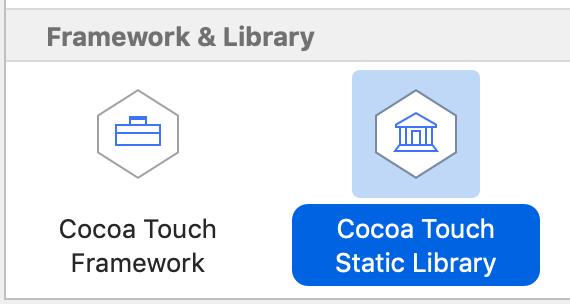
示例：
File -> new -> Cocoa Touch Static Library, 设命名为MyStaticFramework
@interface MyStaticFramework : NSObject
- (void)sayHello;
@end
@implementation MyStaticFramework
- (void)sayHello {
Person *p = [[Person alloc] init];
[p sayHello];
Cat *cat = [[Cat alloc] init];
[cat sayHello];
}
@end
@interface Person : NSObject
- (void)sayHello;
@end
@implementation Person
- (void)sayHello {
NSLog(@"Person say hello");
}
@end
@interface Cat : NSObject
- (void)sayHello;
@end
@implementation Cat
- (void)sayHello {
NSLog(@"Cat say hello");
}
@end
Command+B编译后会生成libMyStaticFramework.a文件，右键show in Finder 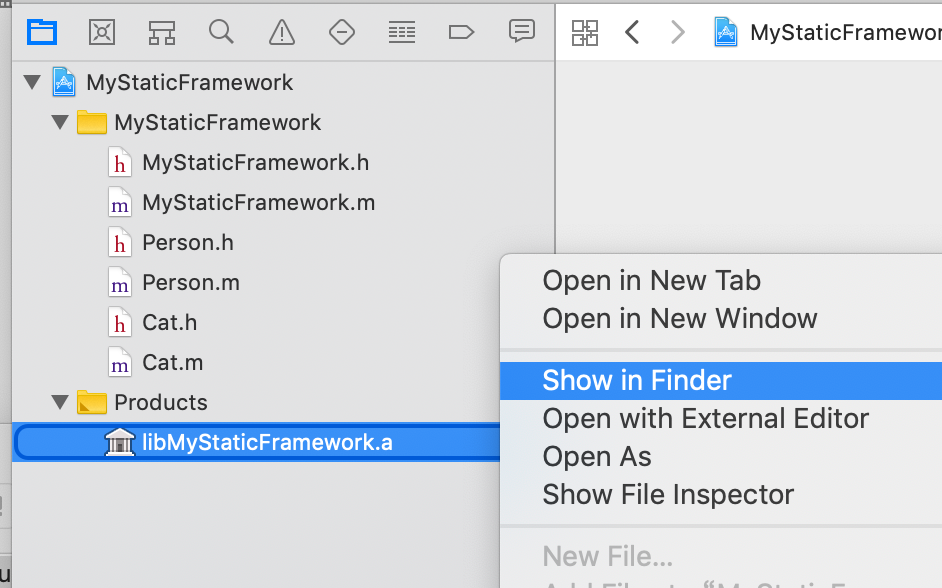 光有.a文件不行, 还需要把头文件暴露出去供别人使用，暴露头文件可以：
- 直接把头文件copy过去,但是一般不会这么做
- 第二种工程内配置，把需要暴露的头文件添加进去, 如下所示： 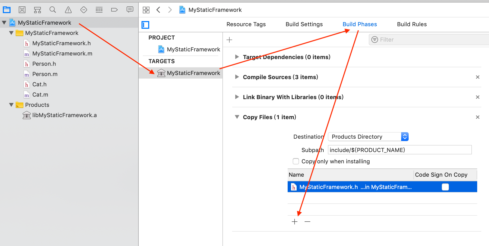
比如我们把Person.h添加进去，这样Command+B编译后，再show in Finder查看： 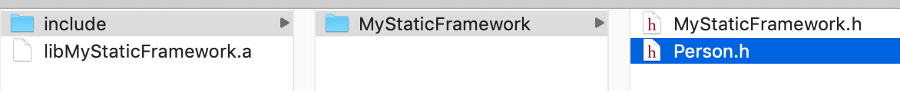
静态库的合并 真机和模拟器的静态库不一样, 要满足同时适用在真机和模拟器上, 就要对编译好真机和模拟器的两个静态库进行合并： lipo -create path_of_lib_1 path_of_lib_2 dest_path，示例：
$ lipo -create Debug-iphoneos/libMyStaticFramework.a Debug-iphonesimulator/libMyStaticFramework.a -output ./libMyStaticFramework.a
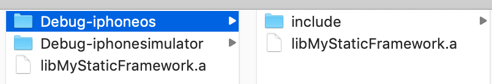
这个新的libMyStaticFramework.a可同时运行在模拟机和真机上，但缺点是合并后的包会变大，因此一些第三方的静态库.a区分不同的包. 我们可以使用lipo -info查看一下这个合并后的包：
$ lipo -info libMyStaticFramework.a
Architectures in the fat file: libMyStaticFramework.a are: x86_64 arm64 #可以看到同时支持x86体系和arm体系
.a静态库的使用
静态库的使用很简单，把.a和头文件拖入工程使用即可：
#import "ViewController.h"
#import "MyStaticFramework.h"
@interface ViewController ()
@end
@implementation ViewController
- (void)viewDidLoad {
[super viewDidLoad];
MyStaticFramework *f = MyStaticFramework.new;
[f sayHello];
Person *p = [[Person alloc] init];
[p sayHello];
}
@end
最后，制作静态库.a的Release版本，只需要改一下Build Configuration为Release即可：
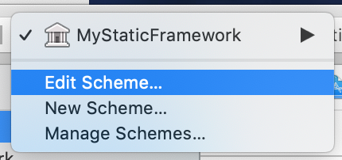 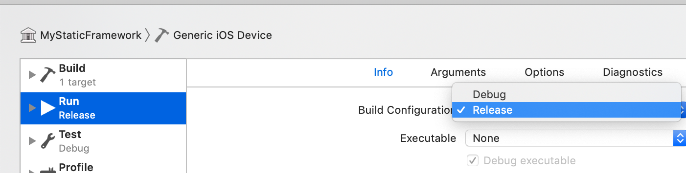 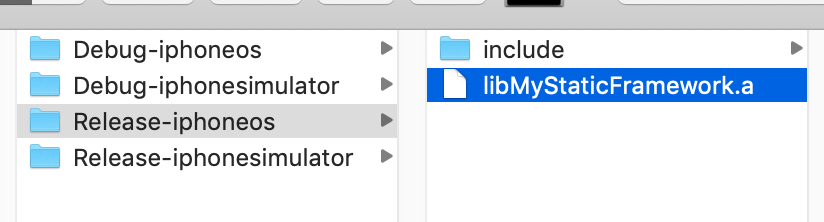
坑
刚创建的.a静态库支持的cpu架构为：x86_64 arm64，如果一个模拟器或真机不是使用的x86_64或arm64就可能跑不起来。比如:
- iPhone simulator 4s ~ iPhone simulator 5:
i386 - iPhone simulator 5s ~ iPhone simulator 7plus:
x86_64 - iPhone 3gs ~ iPhone 4s:
armv7 - iPhone 5 ~ iPhone 5c:
armv7s
为了尽可能的支持更多平台，建议把Build Active Architecture Only（只针对当前活跃架构编译）设置为NO
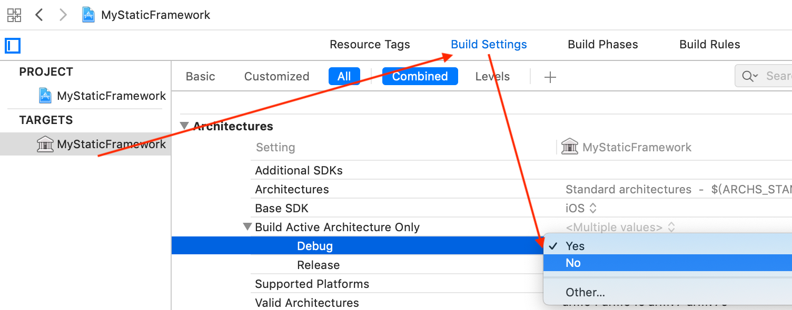
.framework
.framework可为动态库和静态库，先来看动态库
新建一个Single View App的iOS工程：TestWeakLink, 然后在工程主目录下建一module文件夹，引入这个module文件夹到工程。 再建一个叫MyFramework的库(File -> New -> Project -> Cocoa Touch Framework)，放入module目录中，右键module -> Add files to 'TestWeakLink' -> 把MyFramework/MyFramwork.xcodeproj引入进去 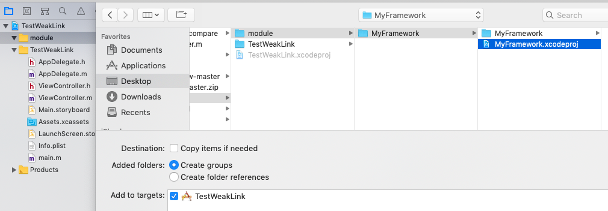
我们新建一个Person类，然后测试：
@interface Person : NSObject
- (void)eat:(NSString *)food;
@end
@implementation Person
- (void)eat:(NSString *)food {
NSLog(@"Person eat: %@", food);
}
@end
要使用Framework，需要做以下配置：
把Person.h头文件引入MyFramework.h
#if __has_include(<MyFramwork/MyFramwork.h>) #import <MyFramwork/Person.h> #else #import "Person.h" #endif把Person.h这个头文件放入Public中 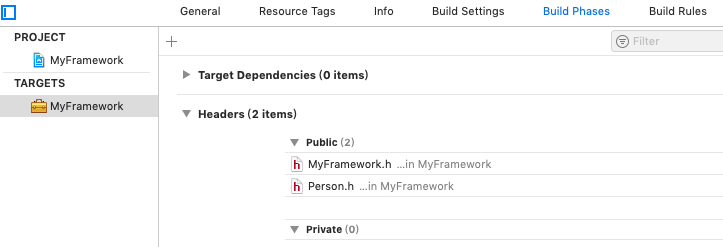
主项目中 -> TARGETS -> Build Phases -> Link Binary With Libraries -> click "+" 加入MyFramework.framework。同理在Target Dependencies中也加入，另外在General下面的Embedded Binaries中也加入
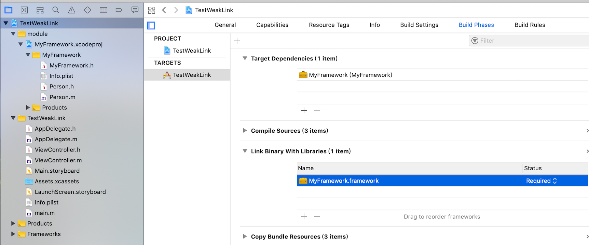
- 使用：
#import <MyFramework/MyFramework.h>
@implementation ViewController
- (void)viewDidLoad {
[super viewDidLoad];
Person *p = Person.new;
[p eat:@"Fruit"];
}
@end
我们这样建的Framework是动态库，可以进入到MyFramework目录，找到MyFramework, 使用file命令查看：
$ file MyFramework
MyFramework: Mach-O 64-bit dynamically linked shared library x86_64 # dynamically linked代表是动态链接, 也可以使用lipo -info MyFramework 查看架构信息
注意这仍旧存在一个CPU架构的问题，同上面.a类似，设置Build Active Architecture Only -> Debug 改为No并且使用lipo -create 合并成真机和模拟器都可使用的包
注： 动态库里可以引入一些静态库，如果这些静态库不暴露在外面，则不会和外面项目中的库引起冲突。
.framework静态库
.framework静态库和.framework动态库的制作类似，区分有两个：
- 更改TARGETS -> Build Settings -> Mach-O Type为
Static Library - 由于不是动态库，因此没有必要在Embedded Binaries中引入
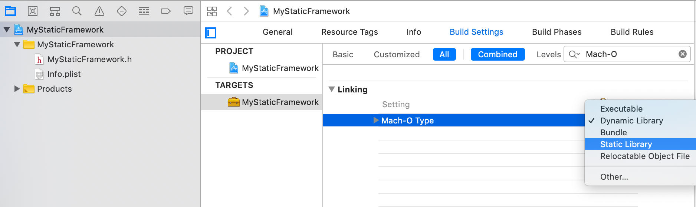
参考链接：